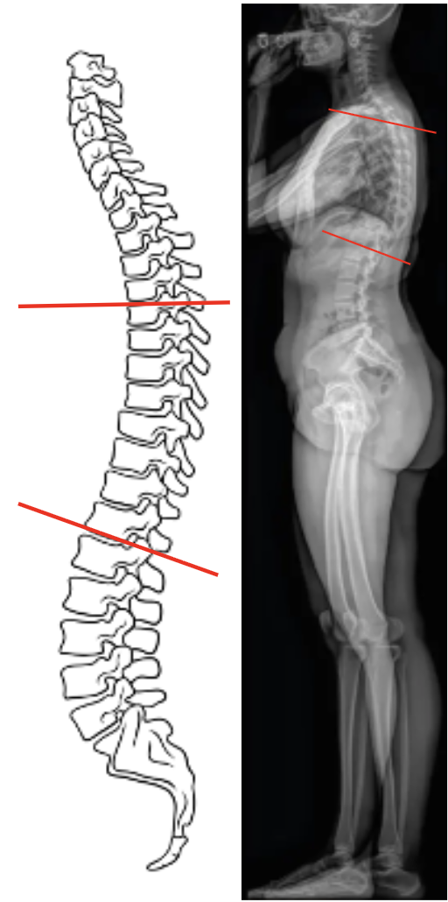

1) Description of Measurement
Thoracic Kyphosis (T5–T12 Cobb Angle) quantifies the posterior convex curvature of the thoracic spine in the sagittal plane.
It reflects the natural kyphotic contour formed by the thoracic vertebrae and is a key parameter for assessing sagittal spinal balance.
Normal thoracic kyphosis is essential for maintaining overall alignment, distributing axial loads, and accommodating thoracic organ position.
Abnormal kyphosis (either excessive or diminished) can indicate postural deformity, Scheuermann’s disease, ankylosing spondylitis, or degenerative sagittal imbalance.
2) Instructions to Measure
3) Normal vs. Pathologic Ranges
4) Important References
Cobb JR. Outline for the study of scoliosis. In: Instructional Course Lectures. Vol 5. American Academy of Orthopaedic Surgeons; 1948:261–275.
Voutsinas SA, MacEwen GD. Sagittal profiles of the spine. Clin Orthop Relat Res. 1986;(210):235–242.
Fon GT, Pitt MJ, Thies AC Jr. Thoracic kyphosis: range in normal subjects. AJR Am J Roentgenol. 1980;134(5):979–983.
Gelb DE, Lenke LG, Bridwell KH, Blanke K, McEnery KW. An analysis of sagittal spinal alignment in 100 asymptomatic middle and older aged volunteers. Spine. 1995;20(12):1351–1358.
Lafage V, Schwab F, Skalli W, Hawkinson N, Gagey PM, Ondra S. Standing balance and alignment in adult spinal deformity: analysis of spinopelvic and gravity line parameters. Spine. 2008;33(14):1572–1578.
5) Other info....
Thoracic kyphosis plays a pivotal role in global sagittal alignment and interacts dynamically with lumbar lordosis and pelvic incidence.
The T5–T12 Cobb Angle is the most reproducible measure of thoracic curvature and should be performed in a neutral standing posture.
When assessing surgical outcomes, documenting both pre- and postoperative Cobb angles helps quantify kyphotic correction.
Abnormal thoracic kyphosis can lead to compensatory cervical or lumbar adjustments, influencing overall posture, horizontal gaze, and spinal load distribution.
In Scheuermann’s kyphosis, thoracic kyphosis often exceeds 55° with associated anterior wedging of ≥5° in three consecutive vertebrae.
EOS imaging or long-cassette stitched lateral X-rays provide the most accurate whole-spine sagittal assessment with minimal distortion.
Always correlate with lumbar lordosis, pelvic tilt, and sagittal vertical axis (SVA) for a comprehensive global balance evaluation.